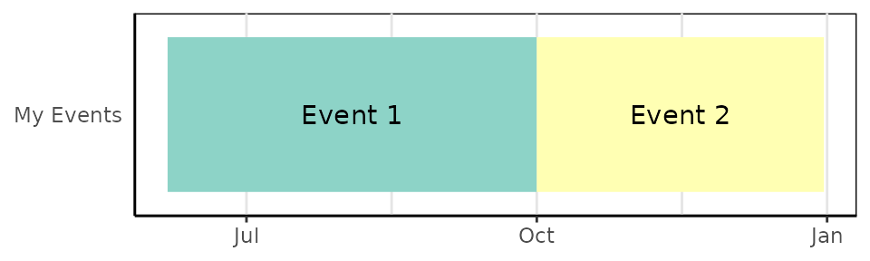
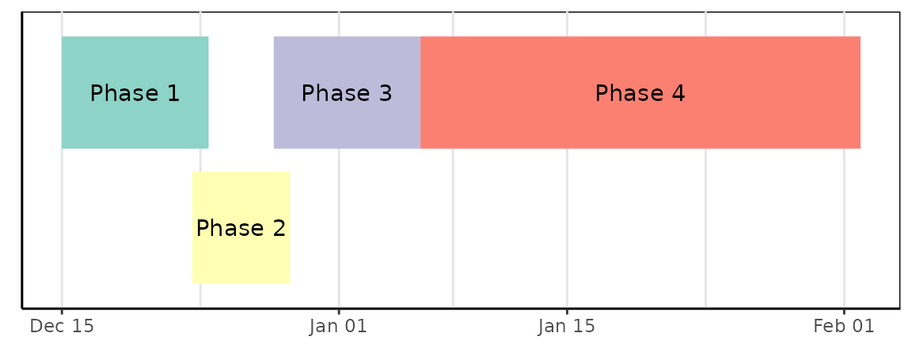
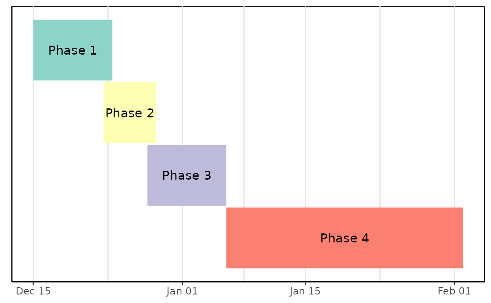

Static timeline plots with gg_vistime()
March 2024
Source:vignettes/gg_vistime-vignette.Rmd
gg_vistime-vignette.Rmd
Feedback welcome: sa.ra.online@posteo.de
1. Basic example
gg_vistime() produces ggplot2 charts.
For interactive Plotly output, see
vistime(), for interactive Highcharts
output, see hc_vistime().
timeline_data <- data.frame(event = c("Event 1", "Event 2"),
start = c("2020-06-06", "2020-10-01"),
end = c("2020-10-01", "2020-12-31"),
group = "My Events")
gg_vistime(timeline_data)
2. Installation
To install the package from CRAN, type the following in your R console:
install.packages("vistime")3. Usage and default arguments
The simplest way to create a timeline is by providing a data frame
with event and start columns. If your columns
are named otherwise, you need to tell the function using the
col. arguments. You can also tweak the y positions,
linewidth, title, label visibility and number of lines in the
background.
gg_vistime(data,
col.event = "event",
col.start = "start",
col.end = "end",
col.group = "group",
col.color = "color",
col.fontcolor = "fontcolor",
optimize_y = TRUE,
linewidth = NULL,
title = NULL,
show_labels = TRUE,
background_lines = NULL)4. Arguments
| parameter | optional? | data type | explanation |
|---|---|---|---|
| data | mandatory | data.frame | data.frame that contains the data to be visualized |
| col.event | optional | character | the column name in data that contains event names. Default: event |
| col.start | optional | character | the column name in data that contains start dates. Default: start |
| col.end | optional | character | the column name in data that contains end dates. Default: end |
| col.group | optional | character | the column name in data to be used for grouping. Default: group |
| col.color | optional | character | the column name in data that contains colors for events. Default: color, if not present, colors are chosen via RColorBrewer. |
| col.fontcolor | optional | character | the column name in data that contains the font color for event labels. Default: fontcolor, if not present, color will be black. |
| optimize_y | optional | logical | distribute events on y-axis by smart heuristic (default) or use order of input data. |
| linewidth | optional | numeric | override the calculated linewidth for events. Default: heuristic value. |
| title | optional | character | the title to be shown on top of the timeline. Default: empty. |
| show_labels | optional | logical | choose whether or not event labels shall be visible. Default:
TRUE. |
| background_lines | optional | integer | the number of vertical lines to draw in the background to demonstrate structure. Default: 10. |
6. Examples
Ex. 1: Presidents
pres <- data.frame(Position = rep(c("President", "Vice"), each = 3),
Name = c("Washington", rep(c("Adams", "Jefferson"), 2), "Burr"),
start = c("1789-03-29", "1797-02-03", "1801-02-03"),
end = c("1797-02-03", "1801-02-03", "1809-02-03"),
color = c('#cbb69d', '#603913', '#c69c6e'),
fontcolor = c("black", "white", "black"))
gg_vistime(pres, col.event = "Position", col.group = "Name", title = "Presidents of the USA")
Ex. 2: Project Planning
data <- read.csv(text="event,group,start,end,color
Phase 1,Project,2016-12-22,2016-12-23,#c8e6c9
Phase 2,Project,2016-12-23,2016-12-29,#a5d6a7
Phase 3,Project,2016-12-29,2017-01-06,#fb8c00
Phase 4,Project,2017-01-06,2017-02-02,#DD4B39
Room 334,Team 1,2016-12-22,2016-12-28,#DEEBF7
Room 335,Team 1,2016-12-28,2017-01-05,#C6DBEF
Room 335,Team 1,2017-01-05,2017-01-23,#9ECAE1
Group 1,Team 2,2016-12-22,2016-12-28,#E5F5E0
Group 2,Team 2,2016-12-28,2017-01-23,#C7E9C0
3-200,category 1,2016-12-25,2016-12-25,#1565c0
3-330,category 1,2016-12-25,2016-12-25,#1565c0
3-223,category 1,2016-12-28,2016-12-28,#1565c0
3-225,category 1,2016-12-28,2016-12-28,#1565c0
3-226,category 1,2016-12-28,2016-12-28,#1565c0
3-226,category 1,2017-01-19,2017-01-19,#1565c0
3-330,category 1,2017-01-19,2017-01-19,#1565c0
1-217.0,category 2,2016-12-27,2016-12-27,#90caf9
4-399.7,moon rising,2017-01-13,2017-01-13,#f44336
8-831.0,sundowner drink,2017-01-17,2017-01-17,#8d6e63
9-984.1,birthday party,2016-12-22,2016-12-22,#90a4ae
F01.9,Meetings,2016-12-26,2016-12-26,#e8a735
Z71,Meetings,2017-01-12,2017-01-12,#e8a735
B95.7,Meetings,2017-01-15,2017-01-15,#e8a735
T82.7,Meetings,2017-01-15,2017-01-15,#e8a735")
gg_vistime(data)
Ex. 3: Gantt Charts
The argument optimize_y can be used to change the look
of the timeline. TRUE (the default) will find a nice
heuristic to save y-space, distributing the events:
data <- read.csv(text="event,start,end
Phase 1,2020-12-15,2020-12-24
Phase 2,2020-12-23,2020-12-29
Phase 3,2020-12-28,2021-01-06
Phase 4,2021-01-06,2021-02-02")
gg_vistime(data, optimize_y = TRUE, linewidth = 25)
FALSE will plot events as-is, not saving any space:
gg_vistime(data, optimize_y = FALSE, linewidth = 25)
7. Export of vistime as PNG
Once created, you can use ggplot2::ggsave() for saving
your vistime chart as PNG:
8. Usage in Shiny apps
-
gg_vistime()objects can be integrated into Shiny viaplotOutput()andrenderPlot()
library(vistime)
pres <- data.frame(Position = rep(c("President", "Vice"), each = 3),
Name = c("Washington", rep(c("Adams", "Jefferson"), 2), "Burr"),
start = c("1789-03-29", "1797-02-03", "1801-02-03"),
end = c("1797-02-03", "1801-02-03", "1809-02-03"),
color = c('#cbb69d', '#603913', '#c69c6e'),
fontcolor = c("black", "white", "black"))
shinyApp(
ui = plotOutput("myVistime"),
server = function(input, output) {
output$myVistime <- renderPlot({
vistime(pres, col.event = "Position", col.group = "Name")
})
}
)9. Customization
Since every gg_vistime() output is a ggplot
object, you can customize and override literally everything:
library(vistime)
data <- read.csv(text="event,start,end
Phase 1,2020-12-15,2020-12-24
Phase 2,2020-12-23,2020-12-29
Phase 3,2020-12-28,2021-01-06
Phase 4,2021-01-06,2021-02-02")
p <- gg_vistime(data, optimize_y = T, col.group = "event", title = "ggplot customization example")
library(ggplot2)
p + ggplot2::theme(
plot.title = element_text(hjust = 0, size=10),
axis.text.x = element_text(size = 10, color = "violet"),
axis.text.y = element_text(size = 10, color = "red", angle = 30),
panel.border = element_rect(linetype = "dashed", fill=NA),
panel.background = element_rect(fill = 'green')) +
coord_cartesian(ylim = c(0.7, 3.5))